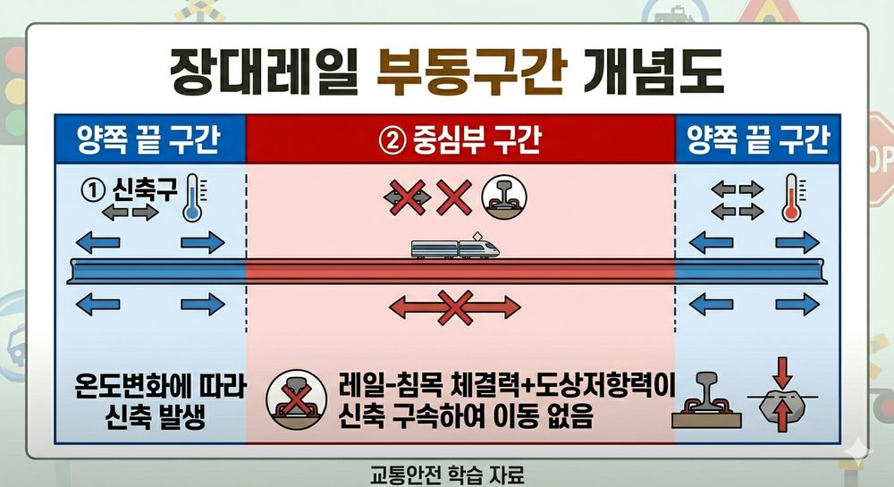

고온 → 레일 팽창하려는 경향 → 구속 시 압축축력 증가 → 궤도좌굴 위험
저온 → 레일 수축하려는 경향 → 구속 시 인장축력 증가 → 레일 파단 위험
궤도복진 = 종방향 이동 (열차 진행 방향)
궤도좌굴 = 횡방향 휨 (옆으로 휘어짐)
| 용어 | 정의 (SOURCE 26·60) |
|---|---|
| 장대레일 | 여러 레일을 현장 또는 공장에서 연속 용접하여 이음매를 크게 줄이거나 없앤 레일. 이음매부 충격·소음을 제거하고 안정성을 높이기 위해 사용한다. ※ 장대레일 최소 길이 기준은 차량 형식·철도 기준에 따라 다를 수 있다. |
| 온도축력 | 장대레일이 온도 변화로 팽창·수축하려 할 때 구속에 의해 발생하는 레일 축방향 힘. |
| 중립온도 | 장대레일 부설 시 레일에 온도에 의한 축방향 힘이 기준적으로 0인 상태의 온도. 이보다 높으면 압축력, 낮으면 인장력 발생. |
| 부동구간 | 장대레일 중앙부에서 온도 변화에도 레일이 이동하지 않는 구간. 도상횡저항력과 침목 저항이 충분한 구간. |
| 신축구간 | 장대레일 양단부에서 온도 변화에 따라 레일이 신축 거동하는 구간. 신축이음매를 설치하여 열변위 흡수. |
| 궤도복진 | 레일 또는 궤도 전체가 열차 진행 방향으로 종방향 이동하는 현상. |
| 궤도좌굴 | 고온 등으로 장대레일의 압축축력이 도상 횡방향 저항을 초과할 때 궤도 전체가 횡방향으로 급격하게 휘어지는 현상. |
장대레일(Long Welded Rail / Continuous Welded Rail, CWR): 여러 레일을 연속 용접하여 이음매를 없애거나 크게 줄인 레일.
장점:
① 레일 이음매 감소 → 충격·진동·소음 감소
② 승차감 향상
③ 유지관리 주기 연장
④ 열차 고속 운행에 유리
⑤ 궤도 틀림 감소
단점 및 관리 포인트:
① 온도 변화 시 축력 발생 → 고온 시 궤도좌굴 위험, 저온 시 레일 파단 위험
② 중립온도 관리가 중요
③ 도상저항·체결상태 관리 필요
④ 부설·관리 기술 요구 수준 높음
✗"온도축력이 발생하지 않는다" → 오답 (온도축력은 반드시 발생)
✓장점: 이음매 충격·소음 감소, 승차감 향상, 고속에 유리
중립온도: 레일에 온도에 의한 축방향 힘이 기준적으로 0인 상태의 온도.
· 레일 온도 > 중립온도 → 팽창하려 함 → 구속 → 압축축력
· 레일 온도 < 중립온도 → 수축하려 함 → 구속 → 인장축력
| 온도 조건 | 레일 거동 | 발생 축력 | 위험 |
|---|---|---|---|
| 고온(여름) | 팽창하려 함 → 구속 | 압축력 | 궤도좌굴 |
| 저온(겨울) | 수축하려 함 → 구속 | 인장력 | 레일 파단 |
부동구간: 레일 중앙부. 도상 저항력이 충분하여 온도 변화에도 이동 없음. 축력이 온도 변화에 비례하여 증감.
신축구간: 장대레일 양단부. 도상 저항력이 작아 레일이 신축하는 구간. 신축이음매를 설치하여 열변위 흡수.

궤도복진: 레일·침목이 열차 진행 방향으로 종방향 이동하는 현상.
발생 원인: 이음매부 약화, 편구배, 잦은 제동·견인력, 불량 도상.
대책: 레일 앵커(Rail Anchor) 설치, 도상 다짐, 신축이음매 관리.
궤도좌굴(Track Buckling): 고온 등으로 장대레일의 압축축력이 커지고, 궤도의 횡방향 저항보다 커질 경우 궤도가 횡방향으로 급격하게 휘어지는 현상.
발생 흐름: 고온 → 장대레일 압축축력 증가 → 도상 횡저항력 초과 → 횡방향 좌굴
좌굴 위험 증가 요인 (다음 조건이 있을수록 위험):
궤도좌굴 방지대책:
✗궤도복진 = 횡방향 이동 → 오답
✓궤도복진 = 종방향(진행 방향) 이동
✓궤도좌굴 = 횡방향 이동 (궤도가 옆으로 휨)
| 구분 | 궤도복진 | 궤도좌굴 |
|---|---|---|
| 이동 방향 | 종방향 (선로 진행 방향) | 횡방향 (옆으로 휨) |
| 대표 원인 | 반복 견인·제동, 이음매 약화 | 고온·압축축력 증가, 도상저항 부족 |
| 핵심 암기 | 복진 = 종 | 좌굴 = 횡 |
도상횡저항력: 침목이 횡방향(레일 수직 방향)으로 이동하려 할 때 자갈 도상이 저항하는 힘.
장대레일 좌굴 안전의 핵심 인자.
도상횡저항력 ↑ → 좌굴 저항 ↑
증대 방법: 자갈 도상 다짐 강화, 도상 폭 확대, PC침목 사용(중량 증가).
Q1 정답 ②
장대레일에 온도 변화가 생기면 신축하려 하지만 구속되어 온도축력(축방향 힘)이 발생한다. 고온 → 압축축력, 저온 → 인장축력.
Q2 정답 ②
궤도복진: 레일·침목이 열차 진행 방향(종방향)으로 이동하는 현상. 온도·제동·견인력·도상 상태 영향.
Q3 정답 ②
도상횡저항력: 침목이 횡방향(레일 수직 방향)으로 이동하려 할 때 자갈 도상이 저항하는 힘. 장대레일 좌굴 방지의 핵심.
Q4 정답 ③
도상 횡저항력 증가는 좌굴에 저항하는 요인이므로 좌굴 위험이 감소한다. 즉 좌굴 위험 증가 조건과 가장 거리가 먼 것이다.
①고온·②도상 다짐 불량·④중립온도 불량은 모두 좌굴 위험 증가 요인이다.
Q5 정답 ②
궤도복진 = 종방향 이동 (열차 진행 방향), 궤도좌굴 = 횡방향 이동 (궤도가 옆으로 휨).
①은 방향이 반대로 기술되어 오답. ③모두 횡방향이라는 표현 오답. ④좌굴은 저온이 아니라 고온 시 발생 오답.